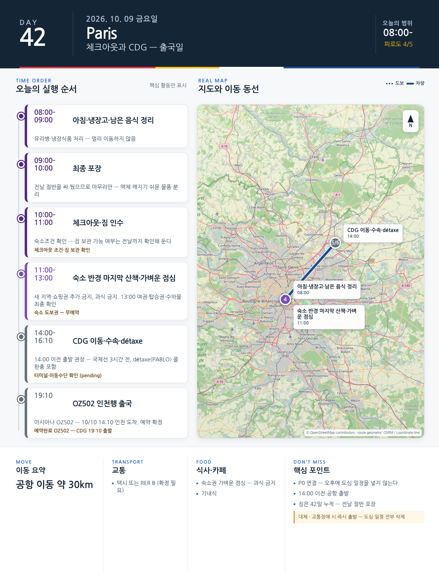

Day 42 · 10/9 금 · Paris

카드의 지도영역은 일정 순서를 보여주는 개요이며 내비게이션이 아닙니다. 실제 도보·운전 경로는 Google Maps에서 다시 계산하세요.
시간표
| 시간 | 일정 | 실행 포인트 |
|---|---|---|
| 08:30–09:30 | 마지막 러닝 또는 산책 | Luxembourg·Seine·숙소권 |
| 10:00–12:00 | 짐 70% 포장·냉장고 정리 | 액체·깨지기 쉬운 물품 분리 |
| 12:00 | 가벼운 숙소 점심 | 남은 재료 사용 |
| 14:00–17:00 | 최종 선택 1곳 | FLV 신규전 / Bourse / 미완료 동네 / 자유쇼핑 |
| 17:30–18:30 | 숙소 휴식·최종 포장 | 다음 날 공항동선 확인 |
| 19:30 | 송별저녁 | Le CasseNoix·Le Bon Georges·선택 특별식 |
| 21:30 | 마지막 야간산책 | 숙소 반경 또는 Seine 30분 |
피로도
3/5
이 날의 메모
마지막 선택, 송별저녁, 떠날 준비
최종 선택 우선순위
- 10/9 개막 Fondation Louis Vuitton: Gustave Fayet 티켓이 있으면 관람.
- 10/7 Bourse를 못 봤으면 대체.
- 두 곳 모두 관심이 낮으면 좋아했던 동네를 다시 방문.
- 쇼핑을 위해 새로운 지역을 추가하지 않는다.
오늘 확인할 것
- 핵심 실행
- 미완료 회수·짐정리
- 권장 출발
- 느린 시작
- 완충
- 오전 포장 70% 보호
- 최고 리스크
- 마지막날 과밀
- 우선 삭제
- FLV/미완료 중 하나
- 대체안
- 숙소·근처 산책
- 식사·휴식
- 송별저녁
- 잠금 필요
- 식당